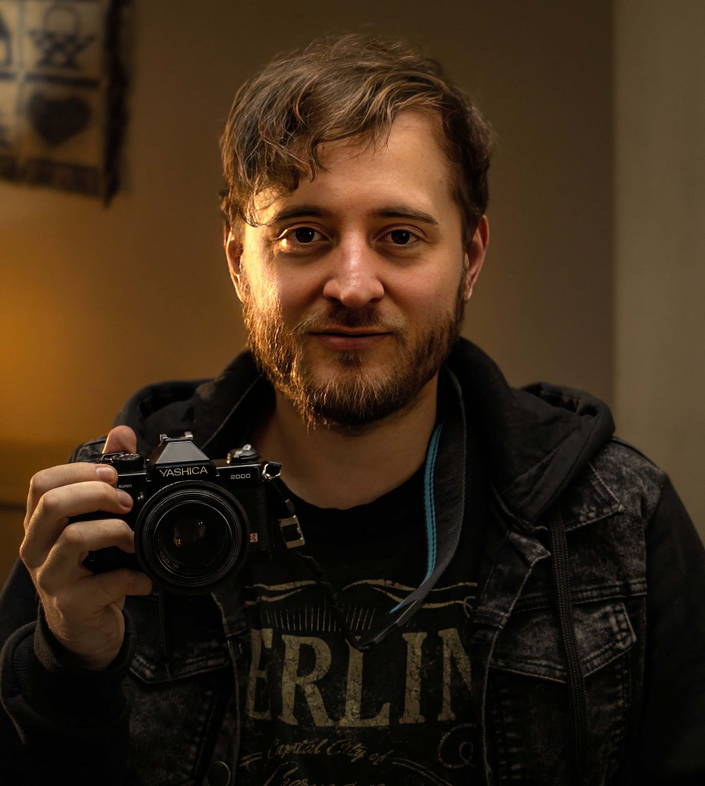

I was born in Argentine Patagonia. Today I live and work in Mexico City.
My love of storytelling led me first to editing and, over time, to directing my own projects.
As a director, I co-directed Retratos del Apocalipsis, my first feature. The film played festivals such as Mar del Plata, Mórbido Film Fest, Fantaspoa and Buenos Aires Rojo Sangre, where it picked up several awards.
As an editor I've cut seven features, including Román by Majo Staffolani and El Amigo Visible by Cristian Bidone, both award winners selected at more than 30 international festivals. In advertising I've edited campaigns for Topline, Netflix and Philco, the latter winning the Lápiz de Oro, the Diente de Oro, the Jerry de Oro and the Martín Fierro.
Today I specialize in AI-driven filmmaking, bringing together directing, editing and visual design. I do it at Gélido AI, a creative studio based in Buenos Aires, Mexico City and Barcelona, where we've made work for Visa, MG, Domino's and Fiserv.
Alongside that, I'm developing AfterByte, my next horror feature. The project won the Colombia and Spain co-production awards at the Fantasolab project lab in Bogotá, and the Ventana Sur award at the Feratum screenwriting residency.